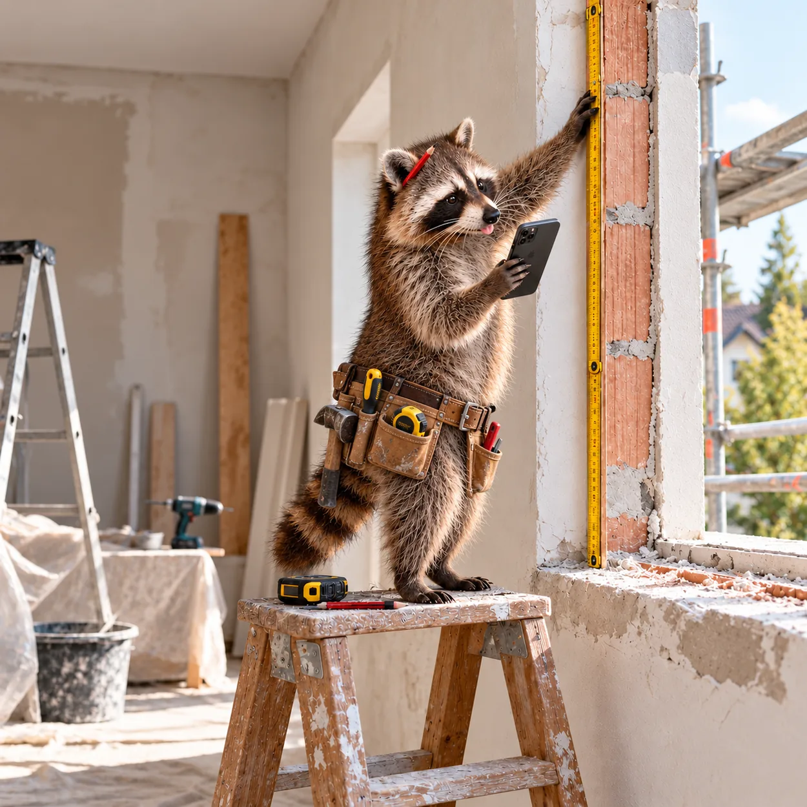

Teil 3 von 6 · Ihr Kunde
Ihr
Kunde
misst.
Im Browser, ohne Konto und ohne App. Er sieht nur Ihren Betrieb.
- Etwa 5 Minuten pro Fenster
- Jederzeit weitermachen
- Kostenlos

Teil 3 von 6 · Ihr Kunde
Im Browser, ohne Konto und ohne App. Er sieht nur Ihren Betrieb.